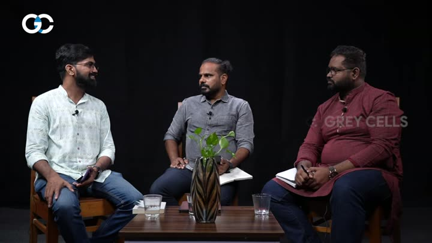
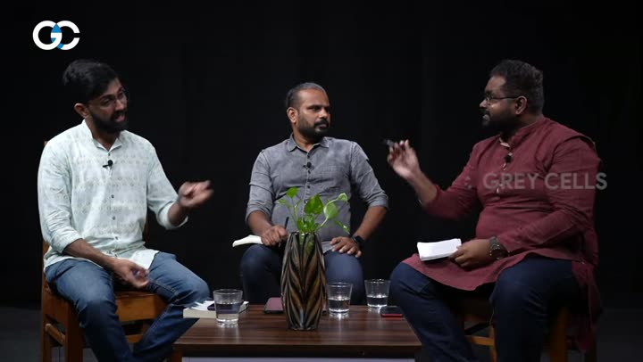
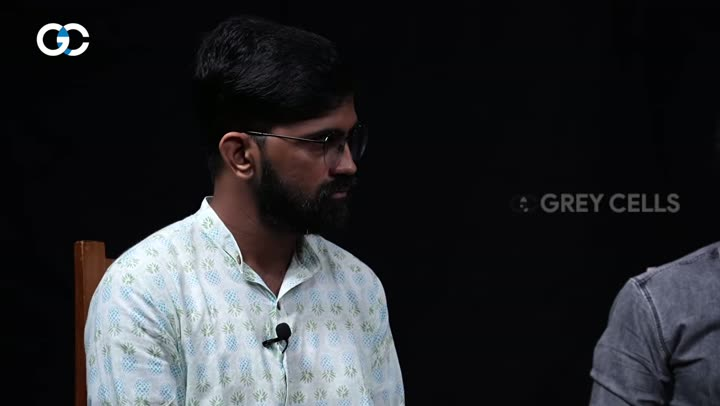
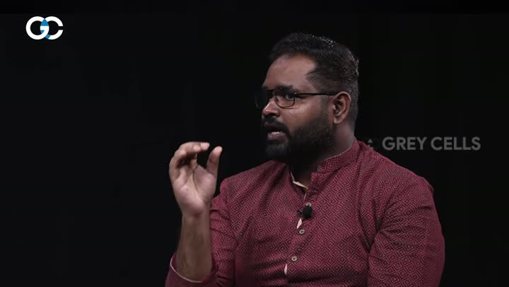

![Kaipps Cafe]()
Authored by Kaipp's AI Repo© 2026 Nishad Kaippally (Kaipps Cafe). All rights reserved.
This report was built with several private and public AI models. It is educational material: not for sale, and not to be reused or republished, including on any YouTube channel, without explicit permission.
Debate on whether the universe is intelligently designed (Malayalam, 104 min)

Ashish, a young apologist and physics teacher, argued that the universe's fine-tuning, its regular laws and the information in living things make a designer the most likely explanation.
Dr. Vaisakhan Thampi answered with three points: we are wired to see agents behind patterns, we would only be here to ask in a universe that allows life, and adding a designer raises more questions than it answers.
Vaisakhan came out stronger. Ashish's worst errors were a misdescription of the atheist view, a false claim about information, and a basic mix-up of numbers. He also never said how a designer would act on the world.
Note: the transcript often puts the wrong name on a line. Speaker 1 and Speaker 2 sometimes stand for Ashish or Vaisakhan. Below, each point is credited to whoever is clearly speaking, judged by what is said.
Ranked from most damaging to least.


